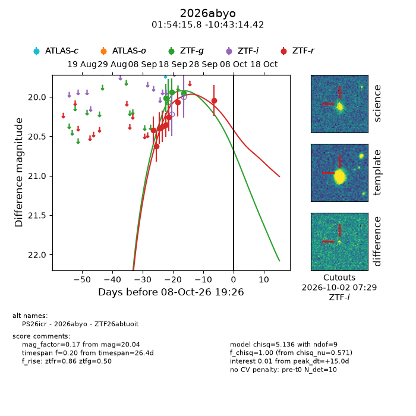
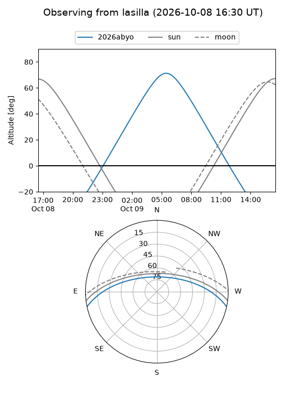
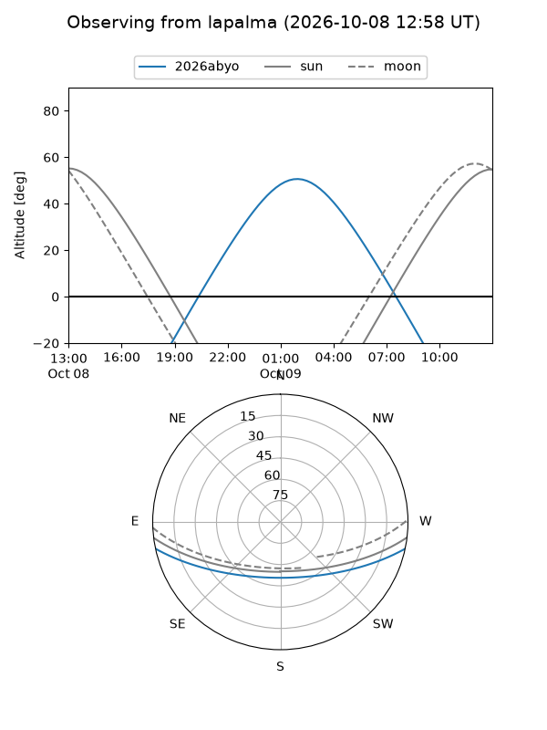
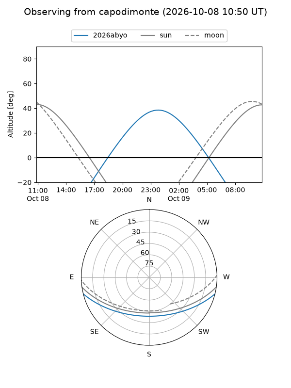
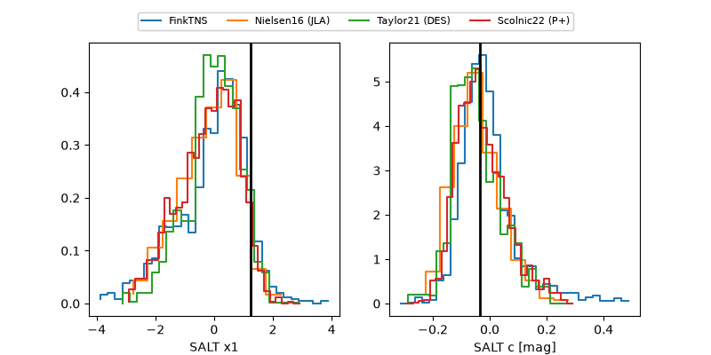

2026abyo
Target 2026abyo at 2026-10-08 19:29
Aliases and brokers:
FINK-ZTF: ztf.fink-portal.org/ZTF26abtuoit
Lasair-ZTF: lasair-ztf.lsst.ac.uk/objects/ZTF26abtuoit
ALeRCE-ZTF: alerce.online/object/ZTF26abtuoit
YSE-PZ: ziggy.ucolick.org/yse/transient_detail/2026abyo
TNS name: wis-tns.org/object/2026abyo
Direct TNS query: direct search
alt names
ZTF26abtuoit (ztf,fink_ztf)
2026abyo (tns,yse)
PS26icr (panstarrs)
Coordinates:
equatorial (ra, dec) = 28.5660,-10.72067
equatorial (HMS+DMS) = 01:54:15.83,-10:43:14.42
galactic (l, b) = (167.9583,-67.91474)
Flags:
TNS type: nan
peak dt: +15.0
Photometry:
last ztfg=19.95, ztfr=20.04
3 ztfg, 8 ztfr detections
Lightcurve

Visibility



Additional plots
